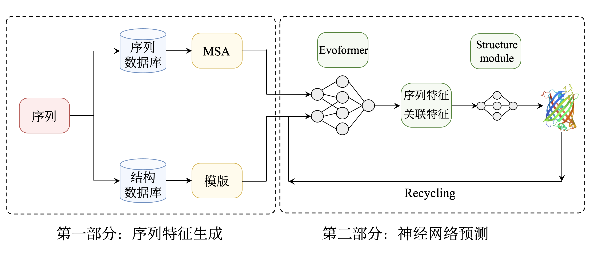
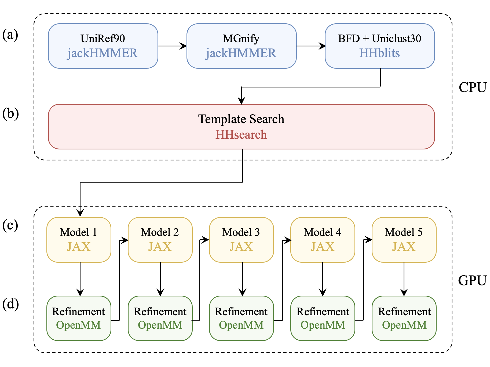
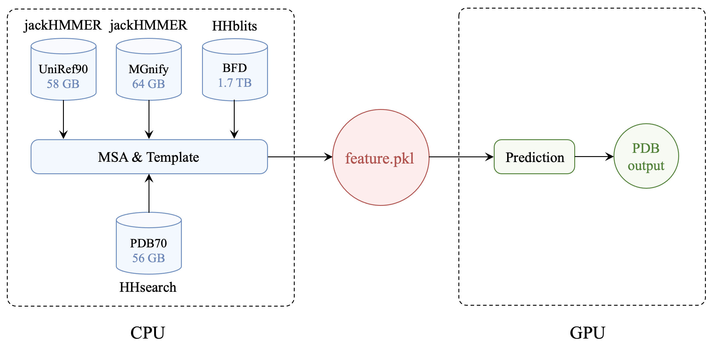
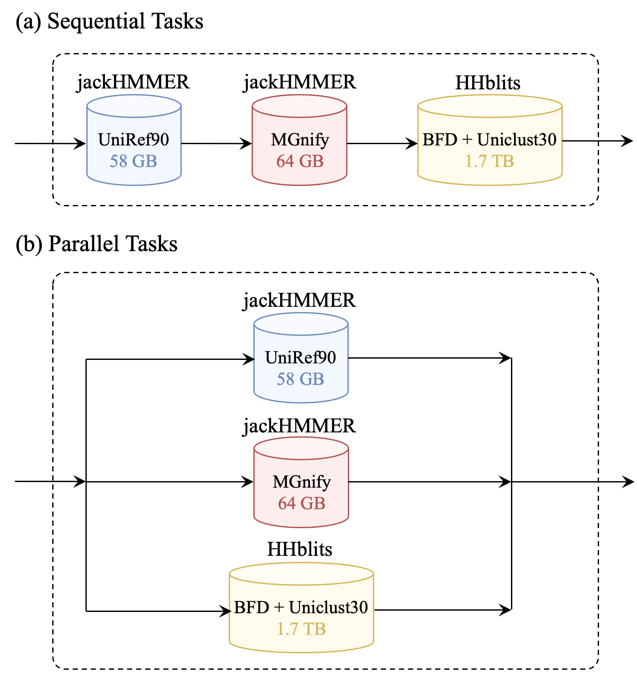
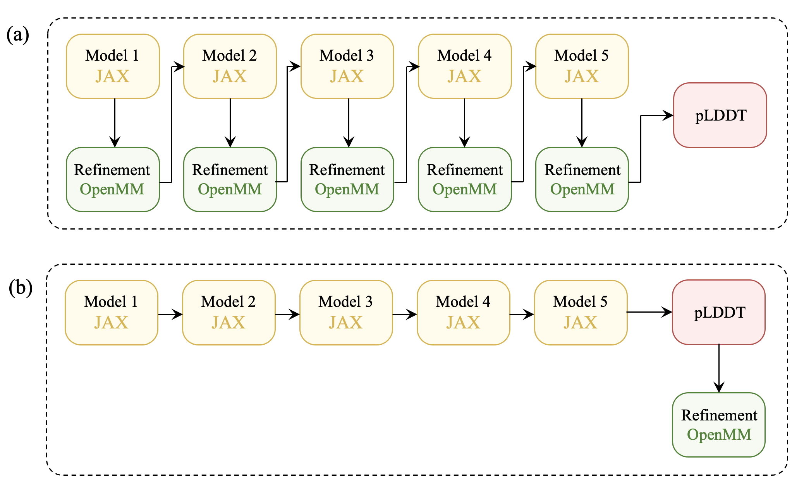
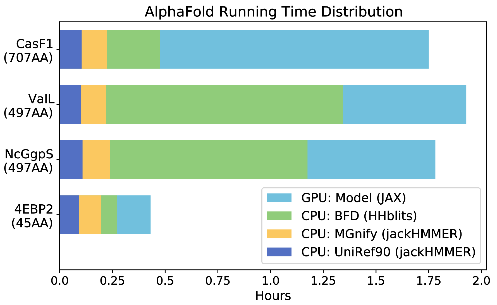
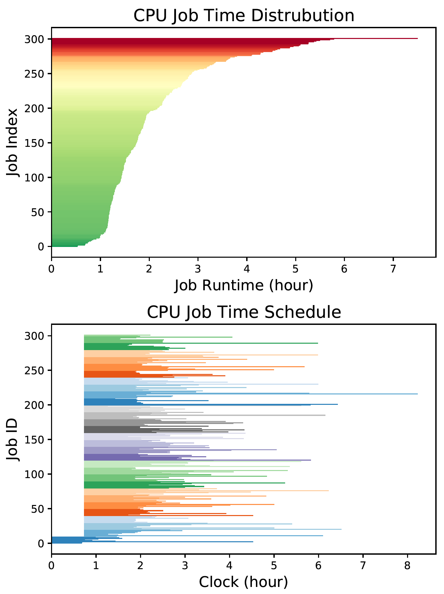
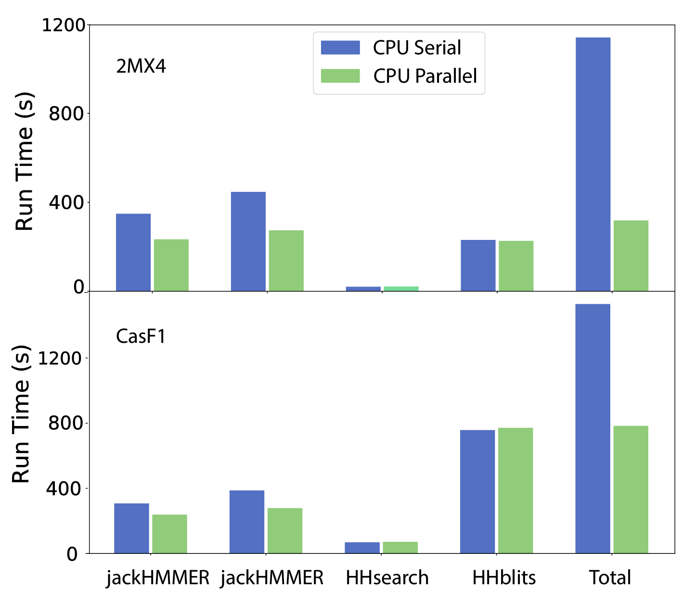
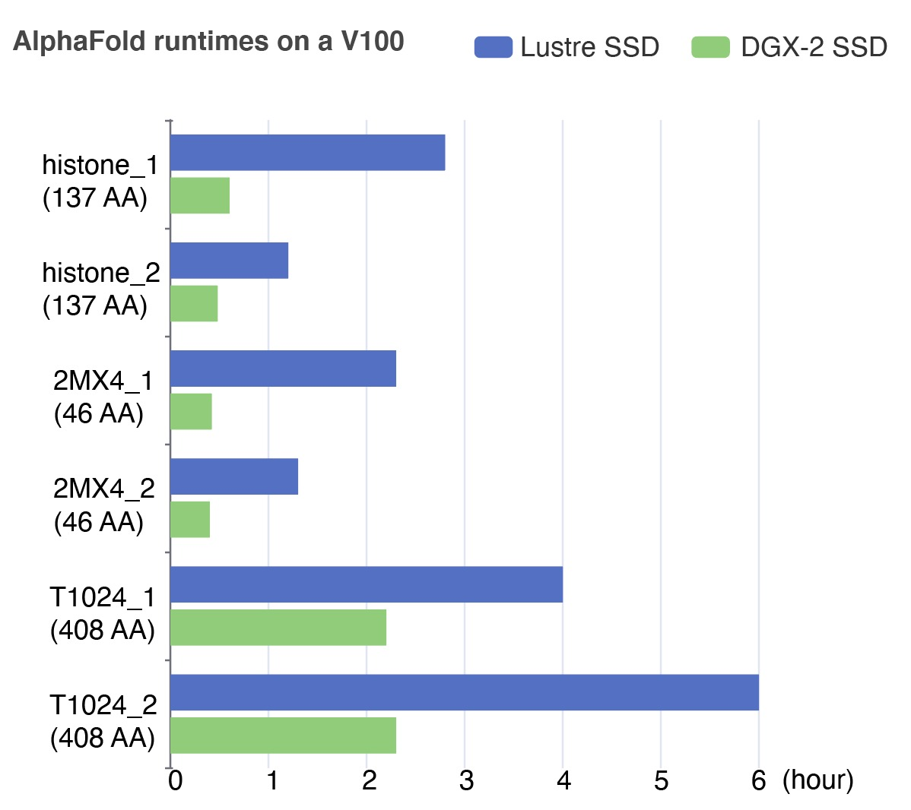

AlphaFold Deployment and Optimization on HPC Platform
Bozitao Zhong, Sicheng Zuo, Minhua Wen, Xiaoming Su
AlphaFold 在 HPC 平台的部署和优化
钟博子韬, 左思成, 文敏华, 苏小明
- 引言
- AlphaFold 介绍
- AlphaFold 部署
- AlphaFold 优化
- AlphaFold 性能测试与分析
- 结束语
- 参考文献
引言
高精度蛋白结构预测能够为生命科学和医学研究带来丰富的启示，成为改变生命科学研究范式的重要契机。快速精准的大规模蛋白结构预测能够激发基础科学、药物研发、合成生物学等方面的未来发展。DeepMind 团队开发的基于深度神经网络的 AlphaFold 方法达到了前所未有的预测准确度，解决了半世纪以来生物学领域最大的挑战，为推进科学进步作出重要贡献。 2021 年 7 月，AlphaFold 的细节在 Nature 杂志上公开1 ，代码也同时开源2 。
AlphaFold 建立了蛋白序列与结构之间的联系，有助于人们更好的发现蛋白的功能。在蛋白功能研究中，解析一个蛋白的结构只能得到部分的信息，而要知道整个蛋白的功能，往往需要解析很多个蛋白，以便通过结构对比、蛋白质互作分析等方法找出其中蕴含的结构范式。因此，AlphaFold 需要能够胜任多条蛋白序列的预测任务，计算规模从突变体库的几十、上百个蛋白，上至蛋白组级别的成千上万条序列。AlphaFold 的计算效率也因此被寄予厚望。然而，测试发现，AlphaFold 代码由于新近发布，CPU、GPU、I/O 等均缺少优化，计算效率较低，难以满足大规模的计算需求2。
上海交通大学高性能计算团队第一时间展开了 AlphaFold 的部署和优化，通过解决 CPU、GPU、I/O 等问题，计算效率大幅提升，每块 NVIDIA Tesla V100 卡的单日蛋白计算总量增长 12 倍，可以满足大规模计算需求，同时可节省 GPU 计算资源，有效解决 I/O 瓶颈问题。
AlphaFold 部署分两种方法：docker 法和 conda 法，分别提供基础版和进阶版，满足用户不同层次计算需求。docker 法优势是以 module 形式全局提供，免除用户自行安装的困难；conda 法适合探索和调试各种参数选项，扩展性更好。
AlphaFold 计算效率优化从以下四个层次进行：
- CPU 与 GPU 计算分离。CPU 与 GPU 分离后可大幅缩短 GPU 上的计算时间，且分离后的 CPU 支持高通量大规模计算。代码已上传至 GitHub 3；
- CPU 并行优化。CPU 计算中的三个搜索任务，由串行改为并行后，CPU 计算增速一倍；
- GPU 优化。调节 JAX 显存管理，以保障更长序列的蛋白计算。略去 4 个得分较低的模型优化，加快 GPU 计算；
- I/O 优化。将海量数据集放置于本地、使用 NVMe SSD、或使用内存持久化等方法，解决 I/O 瓶颈，加速计算。
AlphaFold 介绍
蛋白结构精准预测对生物医药领域至关重要。为了找到最优的蛋白质结构预测方法，CASP (Critical Assessment of protein Structure Prediction) 国际会议每两年举办一次，邀请实验学家们提供未公开结构的蛋白质序列，用于评估当年参赛的结构预测方法的精确度。2020 年之前，尽管历届 CASP 大会上计算生物学家们已积累了许多蛋白结构预测的算法，形成诸多可行的方案，如 Rosetta4，I-TASSER5，RaptorX6 等，但预测结果始终难以挑战实验的精确度。2020 年的 CASP14 大会上，DeepMind 团队带来了开创性的突破，AlphaFold2 方法实现了前所未有的预测精确度，精确度中位数达 92.4 GDT（满分 100 分）1。
AlphaFold2 相较于 2018 年的 AlphaFold1，是个全新的模型，在模型架构层面上有了很大的改动，例如不再使用卷积神经网络，而改用 基于Attention的端到端架构。再加上各种精妙的细节，AlphaFold2 精确度得到了质的飞跃。本文中的 AlphaFold 分析和优化均仅针对 AlphaFold2。
AlphaFold 架构
AlphaFold 架构分为两大部分：序列特征生成和神经网络预测。

图1 AlphaFold 架构。主要由序列特征生成和神经网络预测两大部分组成
第一部分的序列特征包含一维序列特征（多序列比对，MSA）和二维关联特征（残基相关图与模版检索）。多序列比对是指在序列数据库中找与原序列接近的序列，按对应的氨基酸位点做比对。具体而言，通过预测蛋白中每对氨基酸之间的距离分布和化学键角度，结合模仿人类注意力的 Attention 网络架构，既关注局部细节，又聚焦蛋白质结构信息的长距离依赖性，从而实现全面准确的框架预测。
第二部分的神经网络预测，将蛋白结构和生物信息整合到深度学习算法中。主要包含两种方法：神经网络 Evoformer 和结构模块 Structure module。神经网络 Evoformer 将一维序列特征 与二维关联特征结合，作用到蛋白质结构表示上，完成结构预测。蛋白质结构表示用三角形表示蛋白结构信息，再应用特殊设计的 IPA 注意力机制，将 Attention 作用于一维表示的同时，也能够更新蛋白结构的二维表示，并保持了蛋白三维结构的旋转对称等变形。神经网络预测整体包含三次迭代优化(Recycling)，将训练的结果返回输入继续迭代训练，充分实现端到端训练的蛋白结构预测。
AlphaFold 计算流程
AlphaFold 计算流程包含四个部分，如图所示： (a) 多序列比对；(b) 模版搜索；(c) 五个模型预测；(d) 紧随每个模型的 AMBER 结构优化。

图2 AlphaFold 计算流程。(a)多序列比对；(b)模版搜索；(c)模型预测；(d)AMBER 优化。其中 (a)和(b) 使用纯 CPU 计算；(c)和(d) 使用 GPU，虽然也能在 CPU 上运行，但会非常缓慢
AlphaFold 官方代码全程运行于 GPU 卡上，尽管前面的 (a) 与 (b) 两部分为纯 CPU 计算，没有用到 GPU。时间上，以一个典型的短序列为例，全程计算约 100 分钟，其中 (a) 最耗时，约占 60 分钟，(b) 极快，几乎可忽略，(c) 与 (d) 共约 40 分钟。也即真正使用 GPU 的时间仅占 GPU 总运行时间的 40%。对于长序列来说，(a)耗时占比可能更高，达到 GPU 总运行时间的 60% 以上。如此运算方案可能在个人计算机上较为方便，但在高性能计算平台上则存在很大的优化空间。
AlphaFold 成就与亮点
我们认为 AlphaFold 有以下四项成就：
- 完整建立了蛋白结构预测的端到端架构；
- 将物理信息和几何信息融入模型，而不是使用搜索方式找到结构；
- 模型能够预测自己的准确性，用于建模打分和排序；
- 实现了计算机蛋白质建模极高的精确度。
其在神经网络训练中的三大技术亮点如下：
- 基于 Recycling 的迭代优化；
- 广泛应用的 Attention 架构。将二维表横向和竖向反复做 Attention，再局部做 Attention，不断精化 Embedding 过程；
- 半监督学习拓展训练集 (Self Distillation)。用带标签的数据先训练一遍，再用无标签的数据预测一遍，形成新的数据集，然后再混合继续训练。
AlphaFold 的出现极大地促进了结构生物学的发展。一个转变正在发生：几十年来，当蛋白结构预测与实验结果不符时，人们倾向于认为是计算出了错；而今，AlphaFold 带来了反转。当两者不相符时，人们将首先去检查实验出错的可能，因为蛋白折叠结构预测已经变得非常可靠了。
AlphaFold 问题与挑战
AlphaFold 由于新近发布，且一定程度上为了赶在 RoseTTAFold 之前发布，代码尚有许多亟待优化之处。根据我们的测试，AlphaFold 当前主要包含以下四点问题：
- CPU 与 GPU 计算未分拆；
- CPU 缺少优化；
- GPU 缺少优化；
- I/O 瓶颈影响计算速度。
受其影响，计算时常遇到下表所列的各种问题：
问题 原因 计算时间波动较大 I/O 瓶颈 多核无法加快计算 CPU 未优化、I/O 瓶颈 多卡无法加快计算 GPU 未优化、I/O 瓶颈 A100 不比 P100 快 GPU 未优化 难以计算长序列蛋白 CPU、GPU 均未优化 我们将在下文中针对 AlphaFold 存在的四类问题进行优化。
AlphaFold 部署
上海交通大学高性能计算平台第一时间完成了 AlphaFold 的部署，分别采用 docker 和 conda 两种安装方法，向用户提供基础版和进阶版两个版本。下面将具体介绍部署详情。
安装要求
AlphaFold 部署具有一定难度，体现在硬件、软件、数据、文档等多个层面。
- 硬件。需要 GPU 卡。CPU 尽量配 8 核心以上，内存尽量 32 G 以上；
- 软件。官方提供的是 docker 安装；
- 数据。需要自国外多个数据中心下载 438 GB 数据（解压后为 2.2 TB），详见下表；
- 文档。安装和使用文档较为欠缺。
序列数据集 数据量 说明 UniRef90 58 GB 来自 UniProt BFD 1.7 TB AlphaFold 自建 MGnify clusters 64 GB 宏基因组 结构数据集 数据量 说明 PDB 206 GB 用于训练 PDB70 56 GB 结构模板 docker 安装方法
docker 方法可参考 AlphaFold GitHub 官方的 Dockerfile 进行安装2。尽管官方建议使用 CUDA 11 版本，实际上 CUDA 10 版本也支持。安装和使用中需注意几处相对/绝对路径的设置。
conda 安装方法
conda 安装更为灵活，支持更多选项和定制修改，也易通过简易的文件替换来紧随官方更新。CUDA 10 版本的安装可参见 GitHub 7。
conda 安装注意事项：
- CUDA 和 cuDNN 版本需适配，见下表；
- jaxlib 版本须为 0.1.69，这个版本支持 CUDA 统一内存，以运行更长序列的蛋白；
conda 安装时的版本选择：
CUDA driver 11.0 10.2 python 3.8/3.7 3.8/3.7 CUDA toolkit 11.0.3 10.1 cuDNN 8.0.4 7.6 jaxlib 0.1.69 0.1.69 JAX cuda110 cuda101 TensorFlow 2.5.0 2.3.0 AlphaFold 优化
AlphaFold 的优化包含四部分：CPU 与 GPU 分离、CPU 并行优化、GPU 优化和 I/O 优化。
CPU 与 GPU 分离
AlphaFold原本全程运行于 GPU。拆分后，先至 CPU 节点进行耗时最长的多序列比对计算，再至 GPU 节点完成神经网络计算和优化。GPU 节点计算时间由此减至原先的 40\% 左右，大幅降低计算成本。同时，CPU 计算支持多线程高并发，从而实现大规模计算，提升计算效率。

图3 AlphaFold CPU 与 GPU 分离
AlphaFold 使用 pickel 文件 feature.pkl 作为 CPU与 GPU 部分的连接。CPU 运算得到的多序列比对结果，以及蛋白质结构模板搜索结果，均储存在 feature.pkl 文件中。分离 CPU 与 GPU 后，我们编写了两套脚本分别用于 CPU 和 GPU 计算。CPU 的计算提交至 CPU 队列，初始核数为8核，后续可根据内存需求进一步调整，最终输出 feature.pkl 文件。GPU 部分能够自动识别是否已经生成 feature.pkl 文件。若文件已存在，则直接开始神经网络模型预测和优化计算；若未识别到文件，则按原 AlphaFold 流程运行。以此保障 CPU 和 GPU 资源得到充分利用，且借助 CPU 的高并发优势，实现大规模计算，提高计算效率。
CPU 并行加速
AlphaFold 的 CPU 计算主要是完成多序列比对过程中的三个庞大数据库搜索 (jackHMMER, jackHMMER, HHblits)；三个搜索依次运行。优化后，三个搜索同时计算，总运行时间也因此缩短成为三项中时间最长的 HHblits 的搜索时间。

图4 CPU 并行优化。由串行改为并行
在三个数据库的多序列比对计算中，两个 jackHMMER 各需要 8 核 CPU 达到最高性能，HHblits 需要 4 核 CPU 达到最高性能，所以在并行加速过程中，我们给整个任务提供足够的 20 核 CPU 以保证计算效率。
GPU 优化
GPU 优化有两个方向，一是保障更长序列蛋白的计算，二是加快计算。
AlphaFold GPU 应用的是谷歌开源框架 JAX。计算内容是依次对 5 个模型进行预测，并在每个模型预测结束后加以 AMBER 优化。目前，AlphaFold 的 JAX 暂时无法充分利用多卡的算力，计算仅集中于 1 卡。但多卡拥有更大的显存，有助于保障更长序列蛋白的计算。多卡显存由 CUDA 统一内存 (unified memory) 模式调用。因此，将 CUDA 设置成统一内存模式，并调控 JAX 的显存加载和释放，有助于确保充裕的显存来完成长序列蛋白的计算，例如 1200 氨基酸 以上的蛋白。我们总结了以下四个设置，可控制 JAX 仅加载所需的显存，并及时释放。计算会因此偏慢，但长序列计算时，显存充裕，不易出现 out-of-memory (OOM) 的报错。
- jaxlib 版本须为 0.1.69
- TF_FORCE_UNIFIED_MEMORY=1
- XLA_PYTHON_CLIENT_MEM_FRACTION=0.5
- XLA_PYTHON_CLIENT_ALLOCATOR=platform
相应的，若 GPU 资源丰富，多卡情形下指定 XLA_PYTHON_CLIENT_MEM_FRACTION=2 或 4，就能加快计算。
加快计算的另一个途径是仅对得分最高的模型进行 AMBER 优化，而非将 5 个模型全部优化。原因是人们通常只关心得分最高的模型，也即最接近实验里的构型。AMBER 的每个优化花费 3 到 20 分钟不等。省去 4 次优化，即能节省 12 至 80 分钟的 GPU 计算时间。这个改进的具体实现方式是每个模型预测完成后，先不执行 AMBER 优化，待 5 个模型全部算完，通过 pLDDT 打分后，再对得分最高的模型进行 AMBER 优化。

图5 GPU 计算加速：仅对 pLDDT 得分最高的模型进行 AMBER 优化。(a)原流程；(b)改进后
I/O 优化
AlphaFold 计算中，CPU 环节里的 HHblits 程序要在 1.7 TB 的数据集里执行多次随机搜索，少则十几分钟，多则几个小时，因此 I/O 成为计算性能的瓶颈。I/O 瓶颈的一个表现是，同一个算例多次计算，时间差异很大；另一个表现是，给定更多的 CPU 核心或 GPU 卡数，仍无法加快计算。I/O 瓶颈甚至能导致搜索过程超时，整个作业因此异常退出。
为解决 I/O 问题，我们采取了多种方法：将数据放到计算节点本地、使用 NVMe SSD，或使用大内存节点，尽量不使用 Lustre。改进 I/O 后，整体计算速度获得大幅提升。相对于 Lustre 文件系统，使用 DGX-2 的本地存储，能提速多倍。
AlphaFold 性能测试与分析
AlphaFold 优化前
AlphaFold 优化前
我们选用了一系列蛋白用于计算速度测试。蛋白测试集选用时考虑到氨基酸 (AA) 序列长度的多样性，覆盖从 70 氨基酸到 900 氨基酸的范围，以便能够全面的反映常见蛋白质（含 300 至 900 氨基酸）的预测效率。测试结果如下：

图6 GPU 计算加速：仅对 pLDDT 得分最高的模型进行 AMBER 优化。(a)原流程；(b)改进后
测试结果显示，对于几乎所有的蛋白，CPU 部分（包含 MSA 和模版搜索）都消耗了大量的时间，占总时间的 30% 到 70%。其中，jackHMMER 的两个搜索时间在不同长度的蛋白中表现较为稳定，均为 5 分钟左右。第三个搜索 HHblits 耗时最多，且计算速度波动大，即便在相似长度的序列中也存在较大波动。HHblits 在一些测试蛋白中用时极多，甚至超过 50\% 的总任务时间。
整体上，AlphaFold 计算需要 GPU。AlphaFold 虽然也能全部在 CPU 上运行，但速度极慢。
综上所述，AlphaFold 计算存在效率低下的问题，某些计算中 GPU 利用率低于 20%，造成 GPU 资源的浪费。因此，为了提升计算效率，满足大规模计算需求，AlphaFold 的 CPU 与 GPU 分离和优化，就显得十分必要。
CPU 与 GPU 分离
我们修改代码将 AlphaFold 流程中的 CPU 与 GPU 计算分离，设计出一套支持 CPU 多线程高并发计算的脚本。不仅避免了 GPU 资源浪费，也能凭借丰富的 CPU 资源，实现大规模蛋白结构预测。
CPU 与 GPU 计算拆分后，单个蛋白结构预测所需的时间并无明显变化，但对于高通量蛋白结构预测的效率则能够显著提高。

图7 CPU 与 GPU 分离后，CPU 计算分布

图8 CPU 与 GPU 分离后，在单台 DGX-2 上的 GPU 计算时间分布及 GPU 负载
我们测试选用的结构预测中共有 103 个蛋白（其中 CPU 计算部分实际运行了 302 个蛋白，GPU 计算了其中的 103 个蛋白），这个规模可反映出高通量蛋白结构预测计算的特点。测试结果如图 \ref{Fig.CPU} 和 \ref{Fig.GPU} 所示。测试中，GPU 计算运行于一台 DGX-2 节点，包含 16 块 NVIDIA Tesla V100 GPU 卡。
测试结果发现，CPU 部分的计算确实呈现时间波动性。大部分 CPU 运行时间分布在 1 至 4 小时，只有极少数的计算超过 7 小时（且这些任务往往内存溢出报错）。而在 GPU 部分，大部分任务运行时间分布在 0.1 至 0.4 小时之间，平均运行时间不到 20 分钟。整体来看，一台包含 16 块 NVIDIA Tesla V100 卡的 DGX-2 上花费 1.2 小时，就完成 103 个蛋白的结构预测。平均下来，8 台 DGX-2 运行 48 小时能够完成超过 3 万个蛋白的结构预测，胜过 AlphaFold Nature 论文8 中预测的人类蛋白质组数量 (23,391 个)；8 台 DGX-2 运行 120 小时即可完成超过 8 万个蛋白的预测，这个数量已经超过完整的人类蛋白质组 (78,120 个)。
CPU 并行加速后
借助高性能计算平台的优势，在 CPU 与 GPU 分离后，将 CPU 的三步搜索并行，充分利用多线程并行的优势，计算速度可以提升一倍。
测试使用两组蛋白，并行计算的时间比串行缩短一半。串行总时间为各步时间之和，并行总时间约等于最耗时的 HHblits 的时间。

图9 两组蛋白的 CPU 运行时间，分别为优化前的串行，和优化后的并行
I/O 优化后
为保障多用户同时在 HPC 上运行 AlphaFold 的计算效率，解决多任务随机搜索海量数据集时的 I/O 瓶颈问题，我们经过测试，有以下推荐：
- 优先推荐使用 DGX-2 本地的 NVMe SSD 存储。在每台 DGX-2 SSD 上均放置数据；
- 若不得不使用 Lustre 并行文件系统上的存储，请使用 NVMe SSD；
- 不推荐直接使用 Lustre 上非 SSD 的存储；
- 对于分拆到 CPU 的计算，推荐使用大内存节点，或支持内存持久化的 PMem 节点。
分别使用 DGX-2 本地的 SSD 和 Lustre 上的 SSD，三种蛋白各测试两次，运行时间见下图。可以看出，使用 DGX-2 本地的数据能明显加快计算，且计算速度很稳定。相反，使用 Lustre 上的数据，计算很慢，且速度波动大。

图10 三组蛋白（各计算两次）的运行时间。分别使用 Lustre SSD 和 DGX-2 本地 SSD 的数据
结束语
本文介绍了 AlphaFold 在 HPC 平台的部署和优化。部署上运用 docker 和 conda 两种方法，为用户提供易用性和扩展性双重选择；优化分四个层面进行：CPU 与 GPU 分离、CPU 并行优化、GPU 优化、I/O 优化和精度优化。优化后，AlphaFold 可实现大规模高通量计算，每块 NVIDIA Tesla V100 卡每天的计算量由优化前的 12 个蛋白，增至 144 个蛋白，效率提升 12 倍。下一步工作将关注 AlphaFold 的 GPU 深度优化，实现多卡同时计算，使其更快、更准、更易获得，造福广大科研工作者。
参考文献